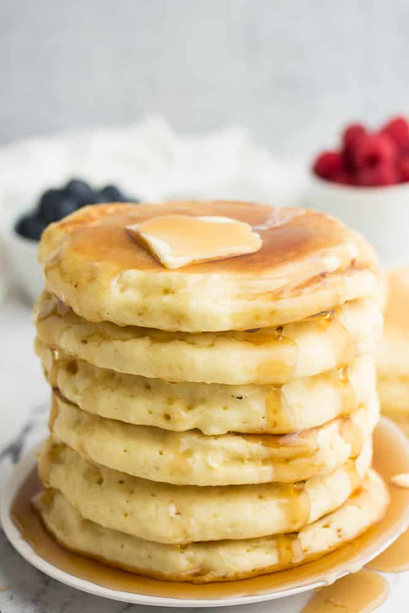

Simple Vegan Pancakes

Description
This is the best vegan pancake recipe we know, but their fluffiness level does seem to fluctuate depend on our stovetop's mood / the wind / the position of the planets. Even a less-fluffy batch is delicious, though! Yields about 3 servings.
1 1/2 cup all-purpose flour
1 tbsp baking powder
2 tbsp granulated sugar
1/2 tsp salt
1 cup non-dairy milk of choice
1/2 cup water
2 tbsp canola oil
Steps
Whisk dry ingredients together in a large bowl.
Add wet ingredients and stir with a large spoon until just combined. Some lumps are expected so do not over-mix or your pancakes won't be as fluffy!.
Heat a griddle or pan over medium-high heat. Grease with vegan butter.
Drop batter on to griddle/pan and cook until bubbles form, then flip and cook until golden brown on the other side.
Stack 'em and serve 'em!